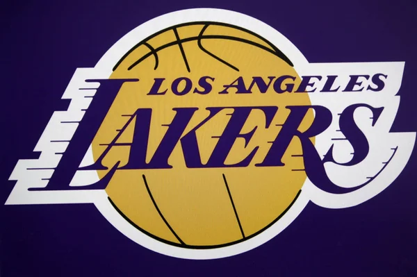

2025-2026 Lakers season
2025-2026 Lakers season1946–1947 (NBL)
Minneapolis Lakers
1947–1948 (NBL)
1948–1949 (BAA)
1949–1960 (NBA)
Los Angeles Lakers
1960–present
| Los Angeles Lakers | |
|---|---|
| 2025-2026 Lakers season |  |
| Conference | Western |
| Division | Pacific |
| Founded | 1946 |
| History |
Detroit Gems 1946–1947 (NBL) Minneapolis Lakers 1947–1948 (NBL) 1948–1949 (BAA) 1949–1960 (NBA) Los Angeles Lakers 1960–present |
| Arena | Crypto.com Arena |
| Location | Los Angeles,California |
| Team colors | ■ ■ ■ Purple, gold, black |
| Main sponsor | Bibigo |
| President | Rob Pelinka |
| General manager | Rob Pelinka |
| Head coach | J.J Redick |
| Ownership | Malk Walter (majority) Jeanie Buss Todd Boehly Edward P Patrick Soon-Shiong |
| Affiliation | South-Bay Lakers |
The Los Angeles Lakers are an American professional basketball team based in Los Angeles. The Lakers compete in the National Basketball Association (NBA) as a member of the Pacific Division of the Western Conference. The Lakers play their home games at Crypto.com Arena, an arena they share with the Los Angeles Sparks of the Women's National Basketball Association (WNBA) and the Los Angeles Kings of the National Hockey League (NHL).[8] The Lakers are one of the most successful teams in the history of the NBA with 17 championships, the second most in the league behind the Boston Celtics.[9] The franchise began in 1946 as the Detroit Gems of the National Basketball League (NBL).[10] After one season, a new ownership relocated the team to Minneapolis, Minnesota,[11][10] and renamed the team as the Minneapolis Lakers.[12] The Lakers won the 1948 NBL championship before joining the rival Basketball Association of America, where they won the 1949 BAA championship. Following the merger of the NBL and the BAA into the NBA in 1949, the Lakers won four of the next five NBA championships.[13] After struggling financially in the late 1950s, they relocated to Los Angeles before the 1960–61 season.
The franchise began in 1946 as the Detroit Gems of the National Basketball
League (NBL).[10] After one season, a new ownership relocated the team to
Minneapolis, Minnesota,[11][10] and renamed the team as the Minneapolis
Lakers.[12] The Lakers won the 1948 NBL championship before joining the
rival Basketball Association of America, where they won the 1949 BAA
championship. Following the merger of the NBL and the BAA into the NBA in
1949, the Lakers won four of the next five NBA championships.[13] After
struggling financially in the late 1950s, they relocated to Los Angeles
before the 1960–61 season.
Names of the teams arenas throught the times:
The Boston Celtics have the most championships, with 18 NBA Finals wins.[178] The Los Angeles Lakers have the second-most with 17; the Golden State Warriors and Chicago Bulls have the third- and fourth-most, respectively, with seven and six titles.Each member of the 2020 Championship Lakers team is receiving a ring that has more carats of diamonds than any other ring in NBA History. The rings were completed for opening night in a record-breaking time of one month from the time the design was finalized. The ring has a total of 804 stones and 15.50 carats of white and yellow diamonds. Another .95 carats feature Lakers purple Amethyst stones. The ring is complete with 16.45 carats of stones and approximately 180 grams of a signature batch of 14 karat yellow gold.fter re-acquiring Derek Fisher, the Lakers started the 2007–08 season with a 25–11 record, before Andrew Bynum, their center who was leading the league in field-goal percentage, went out for the year due to a knee injury in mid-January.[218] In what would become a crucial transfer for the franchise's return to championship form, they acquired the six-time all-star power forward Pau Gasol from the Memphis Grizzlies in a trade in early February and went 22–5 to finish the season.[219] The Lakers' 57–25 record earned them the first seed in the Western Conference.[220] Bryant was awarded the league's MVP award, becoming the first Laker to win the award since O'Neal in 2000.[221][222] In the playoffs, they defeated the Nuggets in four games, the Jazz in six, and the defending champion Spurs in five, but lost to the Celtics in six games in the NBA Finals.[223] In the 2008–09 season, the Lakers finished 65–17; the best record in the Western Conference.[224] They defeated the Jazz in five games, the Rockets in seven and the Nuggets in six, to win the Western Conference title. They then won their 15th NBA championship by defeating the Orlando Magic in five games in the NBA finals.[225] Bryant was named the NBA Finals MVP for the first time in his career.